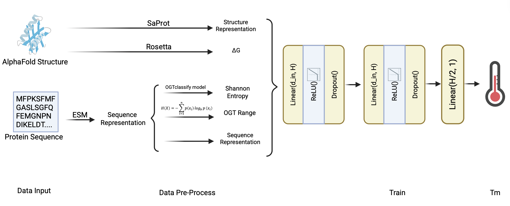

Protein Melting Temperature Prediction via ESM and AlphaFold
Proteins · Multimodal · Regression
Workflow
Model Summary
I owned the modeling and algorithmic components of this melting-temperature project. Working with our collaborators’ curated dataset (FireProt, ProThermDB, Meltome, ThermoMutDB, and more recent literature extractions), I handled quality control after the CD-HIT deduplication stage, ensuring the 28,463 proteins we retained had consistent structural metadata and thermodynamic annotations. The dataset was stratified into a 90/10 train–validation split plus a 2023+ temporal holdout of 75 proteins used only for final generalization checks.
My primary responsibility was to design the multimodal fusion model. I benchmarked multiple representation strategies and settled on pairing AlphaFold-derived SaProt structural embeddings (via precomputed distograms and pLDDT summaries projected to 1280 dimensions) with ESM sequence embeddings of the same width. I engineered additional handcrafted features—including Rosetta ΔG estimates, Shannon entropy, oligomeric state, and an OGT prior—then standardized and concatenated them into a single feature vector.
The regression head I implemented is a three-layer MLP (Linear→ReLU→Dropout) that reduces the fused feature dimension to half-width before emitting a single Tm prediction. I experimented with residual MLP variants and attention pooling, documenting the trade-offs; the chosen architecture hit the best bias–variance balance while staying GPU-efficient for large batches. To keep the model honest about uncertainty, I added MC dropout at inference time, which we now surface as confidence intervals when reporting predictions.
Training infrastructure was another core deliverable. I wrapped the entire pipeline in Optuna for automated hyperparameter tuning (learning rate, hidden width H, dropout, weight decay, batch size), integrated mixed-precision training, and built a metric dashboard tracking RMSE, MAE, and Pearson correlation per fold. After tuning, we reached an RMSE of 9.37 on the temporal test set—beating prior baselines we reimplemented, and the model's stability was verified by 10 repeats of 10-fold cross-validation (100 total fits).
Results
Click headers to sort
| Model | Proteome Coverage | Test RMSE | Validation RMSE |
|---|---|---|---|
| model | 34.18% (893/2613) | 9.3745 | 5.8378 |
| esmtemp | 24.25% (634/2614) | 15.0774 | 5.9494 |
| prostabp2 | 22.38% (585/2614) | 17.2452 | 8.8761 |
| seq2Topt | 32.75% (856/2614) | 12.8500 | 9.6034 |
| DeepStabP | 19.28% (504/2614) | 15.6519 | 6.4214 |
| temBERTure | 20.31% (531/2614) | 14.6336 | 6.2694 |